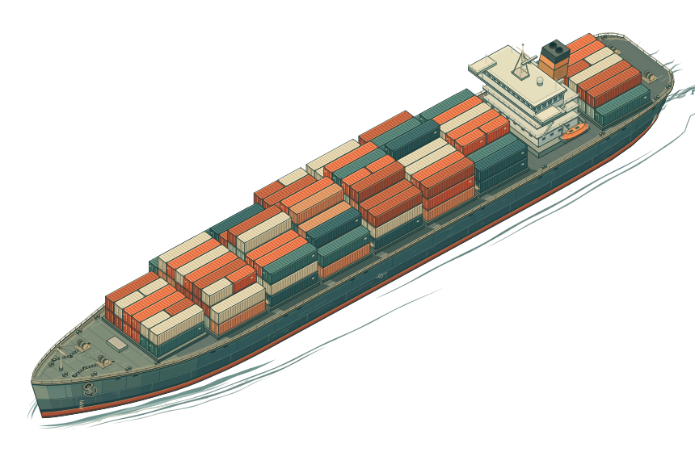

Co-founder / CIS
Evgeny Presnyakov
An investor in manufacturing and mining. Evgeny brings first-hand knowledge of industrial businesses and their customers in the CIS.
Mentor ClubDo you need the full route, or just delivery from the port? Tell us where our leg starts and ends. We check what’s possible for your cargo.


A shipment rarely starts or ends at the port. First we establish where the goods are ready for collection and how far you need us to take them.
The map is an example, not a sailing schedule. We check ports, transshipments and availability for your cargo.
Use this route in a briefGive us the collection point and final destination. A proposal sets out the ocean and inland legs, port charges and responsibility for customs clearance.
If you have booked the sea freight, ask about delivery from the port. If your supplier handles the trip to the terminal, the quote can start there.
If you are still looking for a supplier, start with the specification. We discuss the goods, quantity and purchase terms, then price the freight separately.
Evgeny and Tim bring together experience with industrial customers in the CIS and freight operators in Africa.
An investor in manufacturing and mining. Evgeny brings first-hand knowledge of industrial businesses and their customers in the CIS.
Mentor ClubTim works in international logistics and commodity trading. His focus in this project is the African leg: understanding the shipper’s needs and discussing terms with carriers.
AsymVestStart with the origin, destination and a description of the goods. If you have the weight, delivery terms and cargo-ready date, include them too.
The draft stays with you. The site does not collect shipment details.